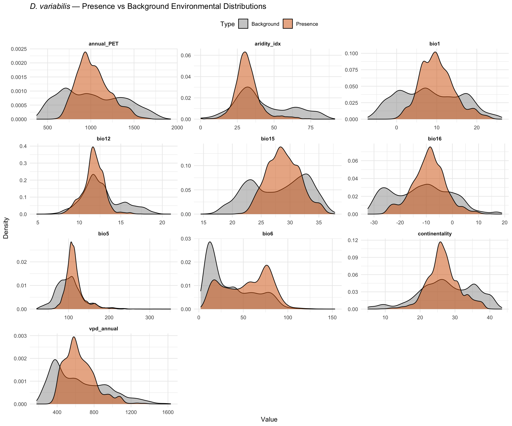

library(tidyverse)
library(terra)
library(sf)
library(rnaturalearth)
library(rnaturalearthdata)Step 3: Environmental Data Preparation
Dermacentor variabilis Species Distribution Model
Overview
This script loads and prepares environmental (climate) data for the D. variabilis SDM from three sources:
- WorldClim 2.1 bioclimatic variables (Bio1-19) at 2.5 arcmin
- ENVIREM derived variables (aridity, PET, continentality)
- CHELSA vapor pressure deficit (VPD) monthly data
We prepare two spatial extents:
- Training extent: Accessible area M (eastern N. America, 500 km buffered convex hull)
- Projection extent: Australia
Environmental values are extracted at occurrence and background point locations.
1. Project paths
base_dir <- "~/Library/CloudStorage/OneDrive-CSIRO/OneDrive - Docs/01_Projects/SDM/Dvariabilis_SDM"
climate_dir <- file.path(base_dir, "climatic_data")
processed_dir <- file.path(base_dir, "processed_data")
figures_dir <- file.path(base_dir, "figures")
wc_dir <- file.path(climate_dir, "wc2.1_2.5m")
envirem_dir <- file.path(climate_dir, "envirem")
chelsa_dir <- file.path(climate_dir, "chelsa")2. Load occurrence and background data
occ <- readRDS(file.path(processed_dir, "occurrences_thinned.rds"))
bg <- readRDS(file.path(processed_dir, "background_coords_random.rds"))
M <- readRDS(file.path(processed_dir, "accessible_area_M.rds"))
sprintf("Occurrences: %d | Background: %d", nrow(occ), nrow(bg))[1] "Occurrences: 4580 | Background: 10000"3. Load WorldClim bioclimatic variables
We load Bio1-19, but exclude Bio8, Bio9, Bio18, Bio19 which have known spatial artifacts in WorldClim (temperature/precipitation quarter assignment discontinuities).
# Load all 19 bioclimatic variables
bio_files <- list.files(wc_dir, pattern = "wc2.1_2.5m_bio_\\d+\\.tif$", full.names = TRUE)
bio_stack <- rast(bio_files)
# Name layers consistently
names(bio_stack) <- paste0("bio", 1:19)
# Exclude artifact-prone variables
exclude_vars <- c("bio8", "bio9", "bio18", "bio19")
bio_selected <- bio_stack[[setdiff(names(bio_stack), exclude_vars)]]
sprintf("Loaded %d WorldClim bioclimatic variables (excluded: %s)",
nlyr(bio_selected), paste(exclude_vars, collapse = ", "))
names(bio_selected)[1] "Loaded 15 WorldClim bioclimatic variables (excluded: bio8, bio9, bio18, bio19)"
[1] "bio1" "bio2" "bio3" "bio4" "bio5" "bio6" "bio7" "bio10" "bio11"
[10] "bio12" "bio13" "bio14" "bio15" "bio16" "bio17"4. Load ENVIREM variables
Selected ENVIREM variables relevant to tick ecology: aridity, PET, and continentality.
# Load key ENVIREM variables
envirem_files <- c(
aridity_idx = file.path(envirem_dir, "current_2-5arcmin_aridityIndexThornthwaite.tif"),
annual_PET = file.path(envirem_dir, "current_2-5arcmin_annualPET.tif"),
continentality = file.path(envirem_dir, "current_2-5arcmin_continentality.tif"),
climate_moisture = file.path(envirem_dir, "current_2-5arcmin_climaticMoistureIndex.tif"),
PET_seasonality = file.path(envirem_dir, "current_2-5arcmin_PETseasonality.tif")
)
envirem_stack <- rast(envirem_files)
names(envirem_stack) <- names(envirem_files)
sprintf("Loaded %d ENVIREM variables", nlyr(envirem_stack))
names(envirem_stack)[1] "Loaded 5 ENVIREM variables"
[1] "aridity_idx" "annual_PET" "continentality" "climate_moisture"
[5] "PET_seasonality" 5. Load CHELSA vapor pressure deficit — compute annual mean
CHELSA provides monthly VPD. We compute the annual mean VPD as a single layer.
vpd_files <- list.files(chelsa_dir, pattern = "CHELSA_vpd_\\d{2}_.*\\.tif$", full.names = TRUE)
vpd_files <- sort(vpd_files)
sprintf("Loading %d monthly CHELSA VPD layers...", length(vpd_files))
vpd_monthly <- rast(vpd_files)
# Compute annual mean VPD
vpd_annual <- mean(vpd_monthly, na.rm = TRUE)
names(vpd_annual) <- "vpd_annual"
sprintf("Computed annual mean VPD from %d monthly layers", nlyr(vpd_monthly))[1] "Loading 12 monthly CHELSA VPD layers..."
|---------|---------|---------|---------|
=========================================
[1] "Computed annual mean VPD from 12 monthly layers"6. Harmonise raster extents and resolutions
All layers need to match the WorldClim grid (2.5 arcmin, global extent). ENVIREM is already at 2.5 arcmin. CHELSA may differ slightly and needs resampling.
# Check resolutions
cat("WorldClim resolution:", res(bio_selected), "\n")
cat("ENVIREM resolution:", res(envirem_stack), "\n")
cat("CHELSA VPD resolution:", res(vpd_annual), "\n")
# Resample ENVIREM and CHELSA to match WorldClim grid if needed
if (!compareGeom(bio_selected, envirem_stack, stopOnError = FALSE)) {
cat("Resampling ENVIREM to WorldClim grid...\n")
envirem_stack <- resample(envirem_stack, bio_selected, method = "bilinear")
}
if (!compareGeom(bio_selected, vpd_annual, stopOnError = FALSE)) {
cat("Resampling CHELSA VPD to WorldClim grid...\n")
vpd_annual <- resample(vpd_annual, bio_selected, method = "bilinear")
}
# Combine all environmental layers into a single stack
env_all <- c(bio_selected, envirem_stack, vpd_annual)
sprintf("Combined environmental stack: %d layers", nlyr(env_all))
names(env_all)WorldClim resolution: 0.04166667 0.04166667
ENVIREM resolution: 0.04166667 0.04166667
CHELSA VPD resolution: 0.008333333 0.008333333
Resampling ENVIREM to WorldClim grid...
|---------|---------|---------|---------|
=========================================
Resampling CHELSA VPD to WorldClim grid...
[1] "Combined environmental stack: 21 layers"
[1] "bio1" "bio2" "bio3" "bio4"
[5] "bio5" "bio6" "bio7" "bio10"
[9] "bio11" "bio12" "bio13" "bio14"
[13] "bio15" "bio16" "bio17" "aridity_idx"
[17] "annual_PET" "continentality" "climate_moisture" "PET_seasonality"
[21] "vpd_annual" 7. Crop to training extent (accessible area M)
# Convert M to terra vector for cropping
M_vect <- vect(st_as_sf(M))
# Crop and mask to M
env_M <- crop(env_all, M_vect)
env_M <- mask(env_M, M_vect)
sprintf("Cropped environmental stack to accessible area M")
cat("Training extent dimensions:", dim(env_M), "\n")[1] "Cropped environmental stack to accessible area M"
Training extent dimensions: 935 1385 21 8. Crop to projection extent (Australia)
# Define Australia extent with buffer
aus <- ne_countries(country = "Australia", scale = "medium", returnclass = "sf")
aus_vect <- vect(aus)
# Crop and mask to Australia
env_aus <- crop(env_all, aus_vect)
env_aus <- mask(env_aus, aus_vect)
sprintf("Cropped environmental stack to Australia")
cat("Australia extent dimensions:", dim(env_aus), "\n")[1] "Cropped environmental stack to Australia"
Australia extent dimensions: 1073 1105 21 9. Extract environmental values at occurrence and background points
# Occurrence points — extract from M-cropped layers
occ_coords <- occ %>% select(decimalLongitude, decimalLatitude)
occ_env <- terra::extract(env_M, occ_coords)
# Add coordinates back and remove ID column
occ_env <- bind_cols(occ_coords, occ_env %>% select(-ID))
# Background points — extract from M-cropped layers
bg_env <- terra::extract(env_M, bg %>% select(lon, lat))
bg_env <- bind_cols(bg %>% select(lon, lat), bg_env %>% select(-ID))
# Check for NAs (points falling outside raster coverage)
occ_na <- sum(!complete.cases(occ_env))
bg_na <- sum(!complete.cases(bg_env))
sprintf("Occurrences with NA environmental values: %d of %d", occ_na, nrow(occ_env))
sprintf("Background with NA environmental values: %d of %d", bg_na, nrow(bg_env))
# Remove rows with NAs
occ_env_clean <- occ_env %>% filter(complete.cases(.))
bg_env_clean <- bg_env %>% filter(complete.cases(.))
sprintf("After removing NAs — Occurrences: %d | Background: %d",
nrow(occ_env_clean), nrow(bg_env_clean))[1] "Occurrences with NA environmental values: 0 of 4580"
[1] "Background with NA environmental values: 45 of 10000"
[1] "After removing NAs — Occurrences: 4580 | Background: 9955"10. Summary of environmental values at occurrence points
# Summary statistics for each variable at occurrence locations
env_summary <- occ_env_clean %>%
select(-decimalLongitude, -decimalLatitude) %>%
pivot_longer(everything(), names_to = "variable", values_to = "value") %>%
group_by(variable) %>%
summarise(
mean = round(mean(value, na.rm = TRUE), 2),
sd = round(sd(value, na.rm = TRUE), 2),
min = round(min(value, na.rm = TRUE), 2),
max = round(max(value, na.rm = TRUE), 2),
.groups = "drop"
) %>%
arrange(variable)
env_summary# A tibble: 21 × 5
variable mean sd min max
<chr> <dbl> <dbl> <dbl> <dbl>
1 PET_seasonality 5459. 479. 2683. 6743.
2 annual_PET 1031. 190. 575. 1681.
3 aridity_idx 31.9 8.86 0 74.3
4 bio1 10.1 4.27 -1.29 24.3
5 bio10 291. 54.6 131 601
6 bio11 198. 99.1 24 526
7 bio12 11.7 1.28 6.94 17.4
8 bio13 31.4 5.08 20.3 55.6
9 bio14 960. 160. 327. 1427.
10 bio15 28.9 2.85 20.9 37.5
# ℹ 11 more rows11. Visualisation — environmental variable distributions
Compare presence vs background distributions for key variables.
# Combine presence and background data
occ_long <- occ_env_clean %>%
select(-decimalLongitude, -decimalLatitude) %>%
pivot_longer(everything(), names_to = "variable", values_to = "value") %>%
mutate(type = "Presence")
bg_long <- bg_env_clean %>%
select(-lon, -lat) %>%
pivot_longer(everything(), names_to = "variable", values_to = "value") %>%
mutate(type = "Background")
combined <- bind_rows(occ_long, bg_long)
# Plot distributions for a subset of key variables
key_vars <- c("bio1", "bio5", "bio6", "bio12", "bio15", "bio16",
"aridity_idx", "vpd_annual", "continentality", "annual_PET")
combined %>%
filter(variable %in% key_vars) %>%
ggplot(aes(x = value, fill = type)) +
geom_density(alpha = 0.5) +
facet_wrap(~variable, scales = "free", ncol = 3) +
scale_fill_manual(values = c("Background" = "grey60", "Presence" = "#D55E00")) +
labs(
title = expression(italic("D. variabilis") ~ "— Presence vs Background Environmental Distributions"),
x = "Value",
y = "Density",
fill = "Type"
) +
theme_minimal(base_size = 11) +
theme(
legend.position = "top",
strip.text = element_text(face = "bold")
)
ggsave(
file.path(figures_dir, "03_env_distributions.png"),
width = 12, height = 10, dpi = 300
)12. Save outputs
# Environmental stacks
writeRaster(env_M, file.path(processed_dir, "env_stack_M.tif"), overwrite = TRUE)
writeRaster(env_aus, file.path(processed_dir, "env_stack_aus.tif"), overwrite = TRUE)
# Save as RDS for faster loading in R
saveRDS(wrap(env_M), file.path(processed_dir, "env_stack_M.rds"))
saveRDS(wrap(env_aus), file.path(processed_dir, "env_stack_aus.rds"))
# Extracted values at points
write_csv(occ_env_clean, file.path(processed_dir, "occurrences_with_env.csv"))
write_csv(bg_env_clean, file.path(processed_dir, "background_with_env.csv"))
saveRDS(occ_env_clean, file.path(processed_dir, "occurrences_with_env.rds"))
saveRDS(bg_env_clean, file.path(processed_dir, "background_with_env.rds"))
# Save variable names for reference
writeLines(names(env_all), file.path(processed_dir, "candidate_variables.txt"))
sprintf("Saved environmental stacks (M and Australia) and extracted values")
sprintf("Total candidate variables: %d", nlyr(env_all))[1] "Saved environmental stacks (M and Australia) and extracted values"
[1] "Total candidate variables: 21"